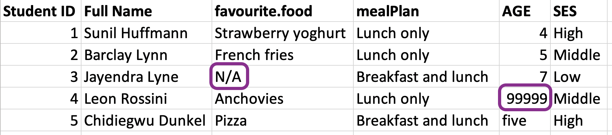

Importing data
Data Science in a Box
layout: true
class: middle
Reading rectangular data into R
class: middle
.pull-left[] .pull-right[]
.pull-left[ ## readr]
| .pull-right[ ## readxl |
- read_excel() - read xls or xlsx files - … ] |
Reading data
nobel <- read_csv(file = "data/nobel.csv")
nobel# A tibble: 935 x 26
id firstname surname year categ~1 affil~2 city country
<dbl> <chr> <chr> <dbl> <chr> <chr> <chr> <chr>
1 1 Wilhelm Conr~ Röntgen 1901 Physics Munich~ Muni~ Germany
2 2 Hendrik A. Lorentz 1902 Physics Leiden~ Leid~ Nether~
3 3 Pieter Zeeman 1902 Physics Amster~ Amst~ Nether~
4 4 Henri Becque~ 1903 Physics École ~ Paris France
5 5 Pierre Curie 1903 Physics École ~ Paris France
6 6 Marie Curie 1903 Physics <NA> <NA> <NA>
# ... with 929 more rows, 18 more variables: born_date <date>,
# died_date <date>, gender <chr>, born_city <chr>,
# born_country <chr>, born_country_code <chr>,
# died_city <chr>, died_country <chr>,
# died_country_code <chr>, overall_motivation <chr>,
# share <dbl>, motivation <chr>, born_country_original <chr>,
# born_city_original <chr>, died_country_original <chr>, ...Writing data
.pull-left[ - Write a file]
| .pull-right[ - Read it back in to inspect |
| ::: {.cell layout-align=“center”} |
{.r .cell-code} read_csv("data/df.csv") |
| ::: {.cell-output .cell-output-stdout} |
| ] |
.your-turn[ ### .hand[Your turn!]]
class: middle
Variable names
Data with bad names
edibnb_badnames <- read_csv("data/edibnb-badnames.csv")
names(edibnb_badnames) [1] "ID" "Price"
[3] "neighbourhood" "accommodates"
[5] "Number of bathrooms" "Number of Bedrooms"
[7] "n beds" "Review Scores Rating"
[9] "Number of reviews" "listing_url" –
… but R doesn’t allow spaces in variable names
ggplot(edibnb_badnames, aes(x = Number of bathrooms, y = Price)) +
geom_point()Error: <text>:1:40: unexpected symbol
1: ggplot(edibnb_badnames, aes(x = Number of
^Option 1 - Define column names
.small[]
Option 2 - Format text to snake_case
edibnb_clean_names <- read_csv("data/edibnb-badnames.csv") %>%
janitor::clean_names()
names(edibnb_clean_names) [1] "id" "price"
[3] "neighbourhood" "accommodates"
[5] "number_of_bathrooms" "number_of_bedrooms"
[7] "n_beds" "review_scores_rating"
[9] "number_of_reviews" "listing_url" class: middle
Variable types
.question[ Which type is x? Why?]
.pull-left[] .pull-right[]
Option 1. Explicit NAs
read_csv("data/df-na.csv",
na = c("", "NA", ".", "9999", "Not applicable")).pull-left[] .pull-right[]
Option 2. Specify column types
read_csv("data/df-na.csv", col_types = list(col_double(),
col_character(),
col_character()))Warning: One or more parsing issues, see `problems()` for details# A tibble: 9 x 3
x y z
<dbl> <chr> <chr>
1 1 a hi
2 NA b hello
3 3 Not applicable 9999
4 4 d ola
5 5 e hola
6 NA f whatup
7 7 g wassup
8 8 h sup
9 9 i <NA> Column types
.small[ type function | data type —————— | ————- col_character() | character col_date() | date col_datetime() | POSIXct (date-time) col_double() | double (numeric) col_factor() | factor col_guess() | let readr guess (default) col_integer() | integer col_logical() | logical col_number() | numbers mixed with non-number characters col_numeric() | double or integer col_skip() | do not read col_time() | time]
.question[ Wondering where you remember these from?]
read_csv("data/df-na.csv")Rows: 9 Columns: 3
-- Column specification -----------------------------------------
Delimiter: ","
chr (3): x, y, z
i Use `spec()` to retrieve the full column specification for this data.
i Specify the column types or set `show_col_types = FALSE` to quiet this message.# A tibble: 9 x 3
x y z
<chr> <chr> <chr>
1 1 a hi
2 <NA> b hello
3 3 Not applicable 9999
4 4 d ola
...class:middle
Case study: Favourite foods
Favourite foods

–
fav_food <- read_excel("data/favourite-food.xlsx") #<<
fav_food# A tibble: 5 x 6
`Student ID` `Full Name` favourite.f~1 mealP~2 AGE SES
<dbl> <chr> <chr> <chr> <chr> <chr>
1 1 Sunil Huffmann Strawberry y~ Lunch ~ 4 High
2 2 Barclay Lynn French fries Lunch ~ 5 Midd~
3 3 Jayendra Lyne N/A Breakf~ 7 Low
4 4 Leon Rossini Anchovies Lunch ~ 99999 Midd~
5 5 Chidiegwu Dunkel Pizza Breakf~ five High
# ... with abbreviated variable names 1: favourite.food,
# 2: mealPlanVariable names

–
fav_food <- read_excel("data/favourite-food.xlsx") %>%
janitor::clean_names() #<<
fav_food # A tibble: 5 x 6
student_id full_name favourite_food meal_~1 age ses
<dbl> <chr> <chr> <chr> <chr> <chr>
1 1 Sunil Huffmann Strawberry yog~ Lunch ~ 4 High
2 2 Barclay Lynn French fries Lunch ~ 5 Midd~
3 3 Jayendra Lyne N/A Breakf~ 7 Low
4 4 Leon Rossini Anchovies Lunch ~ 99999 Midd~
5 5 Chidiegwu Dunkel Pizza Breakf~ five High
# ... with abbreviated variable name 1: meal_planHandling NAs

–
fav_food <- read_excel("data/favourite-food.xlsx",
na = c("N/A", "99999")) %>% #<<
janitor::clean_names()
fav_food # A tibble: 5 x 6
student_id full_name favourite_food meal_~1 age ses
<dbl> <chr> <chr> <chr> <chr> <chr>
1 1 Sunil Huffmann Strawberry yog~ Lunch ~ 4 High
2 2 Barclay Lynn French fries Lunch ~ 5 Midd~
3 3 Jayendra Lyne <NA> Breakf~ 7 Low
4 4 Leon Rossini Anchovies Lunch ~ <NA> Midd~
5 5 Chidiegwu Dunkel Pizza Breakf~ five High
# ... with abbreviated variable name 1: meal_planMake age numeric
.pull-left-wide[] .pull-right-narrow[]
Socio-economic status
.question[ What order are the levels of ses listed in?]
.pull-left-wide[] .pull-right-narrow[]
Make ses factor
.pull-left-wide[]
Putting it altogether
fav_food <- read_excel("data/favourite-food.xlsx", na = c("N/A", "99999")) %>%
janitor::clean_names() %>%
mutate(
age = if_else(age == "five", "5", age),
age = as.numeric(age),
ses = fct_relevel(ses, "Low", "Middle", "High")
)
fav_food# A tibble: 5 x 6
student_id full_name favourite_food meal_~1 age ses
<dbl> <chr> <chr> <chr> <dbl> <fct>
1 1 Sunil Huffmann Strawberry yog~ Lunch ~ 4 High
2 2 Barclay Lynn French fries Lunch ~ 5 Midd~
3 3 Jayendra Lyne <NA> Breakf~ 7 Low
4 4 Leon Rossini Anchovies Lunch ~ NA Midd~
5 5 Chidiegwu Dunkel Pizza Breakf~ 5 High
# ... with abbreviated variable name 1: meal_planOut and back in
write_csv(fav_food, file = "data/fav-food-clean.csv")
fav_food_clean <- read_csv("data/fav-food-clean.csv").question[ What happened to ses again?]
fav_food_clean %>%
count(ses)# A tibble: 3 x 2
ses n
<chr> <int>
1 High 2
2 Low 1
3 Middle 2read_rds() and write_rds()
- CSVs can be unreliable for saving interim results if there is specific variable type information you want to hold on to.
- An alternative is RDS files, you can read and write them with
read_rds()andwrite_rds(), respectively.
read_rds(path)
write_rds(x, path)Out and back in, take 2
write_rds(fav_food, file = "data/fav-food-clean.rds")
fav_food_clean <- read_rds("data/fav-food-clean.rds")
fav_food_clean %>%
count(ses)# A tibble: 3 x 2
ses n
<fct> <int>
1 Low 1
2 Middle 2
3 High 2class: middle
Other types of data
Other types of data
- googlesheets4: Google Sheets
- haven: SPSS, Stata, and SAS files
- DBI, along with a database specific backend (e.g. RMySQL, RSQLite, RPostgreSQL etc): allows you to run SQL queries against a database and return a data frame
- jsonline: JSON
- xml2: xml
- rvest: web scraping
- httr: web APIs
- sparklyr: data loaded into spark
.your-turn[ ### .hand[Your turn!] .midi[ - RStudio Cloud > AE 06 - Nobels and sales + Data import > sales-excel.Rmd. - Load the sales.xlsx file from the data-raw/ folder, using appropriate arguments for the read_excel() function such that it looks like the output on the left. - Stretch goal: Manipulate the sales data such that it looks like the output on the right.]]
.pull-left[] .pull-right[]